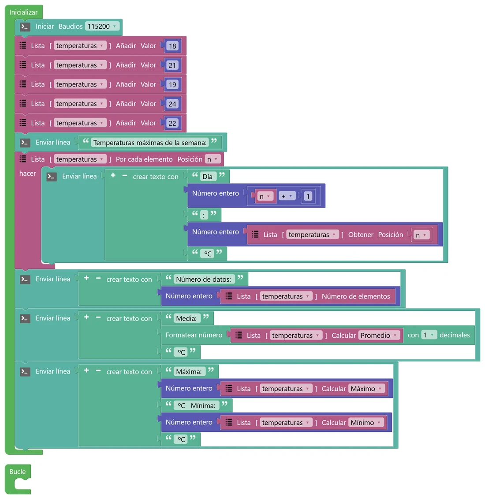
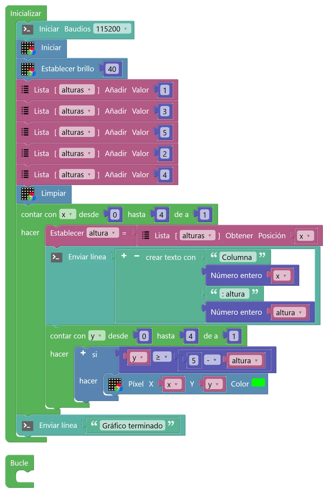
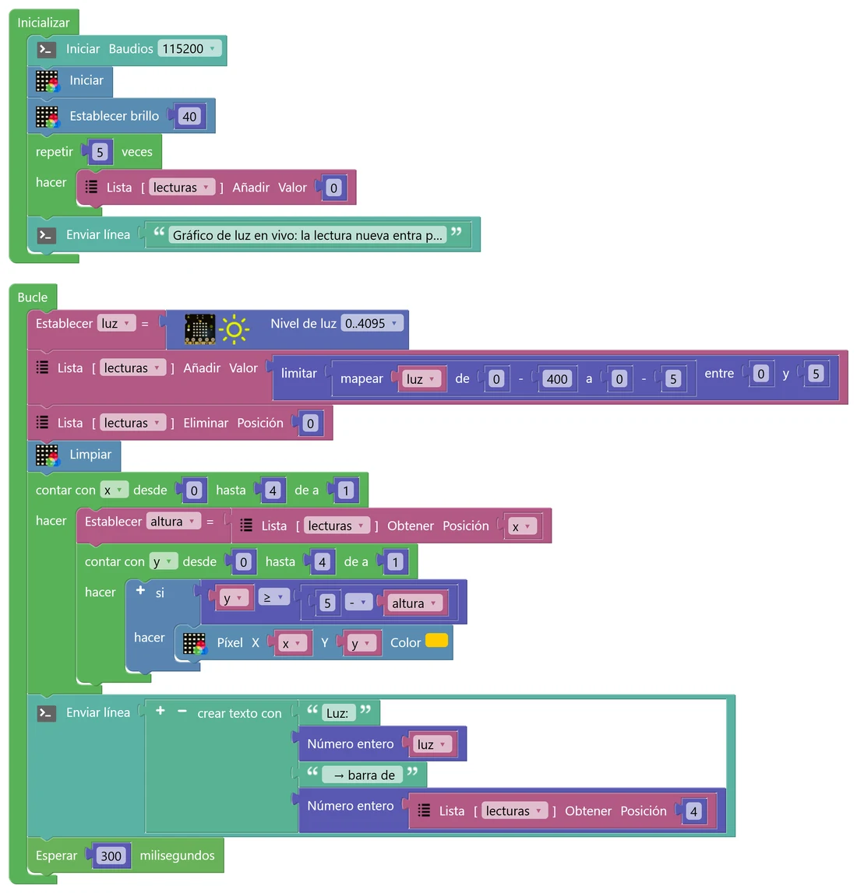

N6 Listas y bucles anidados
Una variable guarda un dato. Pero un sensor da un dato cada pocos milisegundos, y para hacer una gráfica o una estadística necesitas guardar muchos. Para eso están las listas. Y para recorrer la matriz punto a punto, fila a fila, aprenderás a meter un bucle dentro de otro.
🎯 Objetivo
- Crear una lista de números, añadir y quitar elementos, y leer uno por su posición.
- Recorrer una lista con un bucle y calcular estadísticas: media, máximo, mínimo, moda.
- Usar bucles anidados para recorrer la matriz por columnas y filas.
- Dibujar un gráfico de barras en la matriz y hacer que se desplace con datos en vivo.
🧠 Antes de empezar
Una lista es una variable que guarda varios valores en orden. Cada valor ocupa una posición, y las posiciones empiezan a contar en 0, igual que en Python: en una lista de 5 elementos, las posiciones van de 0 a 4.
🐍 En Python
temperaturas = [18, 21, 19, 24, 22] temperaturas.append(20) # añadir al final temperaturas.pop(0) # quitar la posición 0 print(temperaturas[1]) # → 21 print(len(temperaturas))
🧩 En STEAMakersBlocks
Las listas se crean en Listas › Numérica con Crear lista… (Número). Después aparecen sus bloques: Añadir (append), Eliminar posición (pop), Obtener posición ([ ]), Actualizar posición, Número de elementos (len), Eliminar todo, Por cada elemento y Calcular (estadísticas).
💡 Para entenderlo: una cajonera numerada
Una variable es una caja con etiqueta (N2). Una lista es una cajonera: una sola etiqueta, «temperaturas», y muchos cajones numerados. Para sacar algo dices el número del cajón: «temperaturas, cajón 1». El primer cajón es el 0, por eso el cajón 1 es el segundo. Es la confusión más típica con las listas: tenla presente cuando algo «salga desplazado».
🧩 Programa 1 · Una lista de datos
Guardamos las temperaturas máximas de cinco días, las recorremos para escribirlas una a una y pedimos a la lista sus estadísticas. Todo va en Inicializar: se ejecuta una vez y ya está. Abre la consola y pulsa RESET si te lo pierdes.

🛠️ Móntalo paso a paso
- En Listas › Numérica pulsa Crear lista… (Número) y llámala temperaturas. Crea también una variable de número, n (Variables).
- En Inicializar: la consola y cinco bloques Lista [temperaturas] Añadir con 18, 21, 19, 24 y 22.
- Un bloque Lista [temperaturas] Por cada elemento. En su hueco Posición elige la variable n: en cada vuelta, n valdrá 0, 1, 2…
- Dentro, un Enviar línea con «Día » + Número entero(n + 1) + «: » + Número entero(Lista [temperaturas] Obtener posición n) + « ºC». El «n + 1» es para que los días salgan del 1 al 5 y no del 0 al 4.
- Después del bucle: Número de elementos y tres Calcular (Promedio, Máximo y Mínimo). La media lleva decimales: usa Formatear número con 1 decimal.
- ¿Qué temperatura hay en la posición 3? ¿Y qué día de la semana es? Explica la diferencia entre posición y número de día.
- Comprueba la media a mano. ¿Coincide? ¿Por qué la media tiene decimales y los datos no?
- Pon un dato muy alto (por ejemplo 40) en el simulador. ¿Cuánto cambia la media? ¿Y la máxima? ¿Cuál de las dos describe mejor «cómo ha sido la semana»?
🧩 Programa 2 · Un gráfico de barras
Cada número de la lista será la altura de una columna de la matriz. Para encender los LED hay que recorrer todas las columnas y, dentro de cada columna, todas las filas: un «contar con» dentro de otro.

🛠️ Móntalo paso a paso
- Crea la lista alturas y tres variables de número: x, y y altura.
- En Inicializar: consola, Iniciar y brillo 40 (micro:STEAMakers › NeoMatrix), cinco Añadir (1, 3, 5, 2, 4) y Limpiar.
- Un contar con (Control) con la variable x, desde 0 hasta 4 de a 1. Dentro: Establecer altura = Lista [alturas] Obtener posición x y un Enviar línea que lo cuente.
- Todavía dentro del primero, otro contar con con la variable y, desde 0 hasta 4. Dentro: un si con y ≥ 5 − altura (comparar en Lógica, la resta en Matemáticas) que pinte Píxel X = x, Y = y (micro:STEAMakers › NeoMatrix).
💡 Para entenderlo: el acomodador del cine
Un acomodador revisa un cine fila por fila: «fila 1: butaca 1, 2, 3…; fila 2: butaca 1, 2, 3…». Por cada vuelta del bucle de fuera (la fila), el bucle de dentro da todas sus vueltas (las butacas). Aquí, por cada columna x, el bucle de las filas y da 5 vueltas: en total, 5 × 5 = 25 preguntas «¿enciendo este LED?». Pulsa «Paso a paso» en el simulador y míralo vuelta a vuelta.
- En «Paso a paso», ¿qué variable cambia más deprisa, x o y? ¿Cuántas veces se ejecuta el «si» en total?
- Cambia y ≥ 5 − altura por y < altura. ¿Qué le pasa al gráfico? ¿Por qué?
- ¿Qué pasa si pones una altura de 7? ¿Y de −1? ¿Cómo lo evitarías? (Pista: N4).
🧩 Programa 3 · Gráfico de luz en vivo
Ahora los datos vienen del sensor. Cada 0,3 s leemos la luz, la convertimos en una altura de 0 a 5, la añadimos al final de la lista y quitamos la más antigua (posición 0). Así la lista siempre tiene 5 datos y el gráfico se desplaza hacia la izquierda, como en un monitor de un hospital.

🛠️ Móntalo paso a paso
- Parte del Programa 2: duplica el proyecto o copia sus bloques. Cambia la lista por una nueva, lecturas, y crea la variable luz.
- En Inicializar, en lugar de los cinco valores: repetir 5 veces → Añadir 0. La lista empieza con cinco ceros.
- Mueve los dos «contar con» al Bucle. Antes de ellos: Establecer luz = Nivel de luz (0..4095), Añadir a la lista limitar(mapear(luz de 0–400 a 0–5), 0, 5), Eliminar posición 0 y Limpiar.
- Al final del Bucle, un Enviar línea con la luz y la última altura (posición 4), y Esperar 300 ms.
- Mueve la mano sobre el sensor despacio y luego deprisa. ¿Cuántos segundos de «historia» caben en la matriz?
- ¿Qué pasaría si quitaras el bloque «Eliminar posición 0»? Piensa en el tamaño de la lista al cabo de una hora. (La memoria de la placa es grande, pero no infinita).
- ¿Por qué hace falta Limpiar antes de dibujar? Pruébalo sin él.
🚀 Retos
El dado en cifras
Al pulsar A, lanza el dado 30 veces y guarda las tiradas en una lista (vacíala antes). La consola muestra la media (con dos decimales), la moda, el mínimo y el máximo. ¿Se parece la media a 3,5? ¿Y si lo lanzas 30 veces más?
Ecualizador
Cambia la luz del Programa 3 por el pico del sonido (N4) y haz que las barras se muevan con la música, sin espera. Los LED de arriba, en rojo; el del medio, en amarillo, y los de abajo, en verde, como en un equipo de música.
Ordenar la lista
Al pulsar A, crea una lista de 6 números al azar y ordénala tú con el método de la burbuja: recorre la lista comparando cada número con el siguiente y, si están al revés, intercámbialos; repite el recorrido varias veces. Muestra la lista tras cada pasada y cuenta los intercambios. Después, compara con el bloque Ordenar de la lista.
🔧 Bajo el capó: listas que crecen y bucles que se adaptan
Así traduce STEAMakersBlocks las listas del Programa 1:
#include <ArrayListAB.h> ArrayListAB<double> listNum_temperaturas; ... listNum_temperaturas.add(18); for (n = 0; n < listNum_temperaturas.size(); n++) { Serial.println(... listNum_temperaturas[n] ...); } listNum_temperaturas.average(); // también maxim(), minim(), mode()…
📦 Una lista que crece
En C++ «de toda la vida», un conjunto de datos (un array) tiene un tamaño fijo que se decide al escribir el programa. ArrayListAB es una pequeña librería que guarda los datos en la memoria y la va ampliando cuando añades elementos, igual que una lista de Python. Cada número ocupa 8 bytes (es un double), así que mil lecturas ocupan unos 8 KB de los 520 KB de RAM del ESP32.
Fíjate en que «Por cada elemento» es un for sobre la posición (de 0 a size() − 1), no sobre el valor: por eso dentro necesitas «Obtener posición n».
🔁 Un «contar con» que piensa
Cuando el «hasta» de un «contar con» es una operación, como 4 − i en el reto pro, STEAMakersBlocks no sabe al escribir el código si va a contar hacia arriba o hacia abajo, y genera esto:
int j_end = (4 - i); for (j = 0; (0 <= j_end) ? j <= j_end : j >= j_end; j += (0 <= j_end) ? +1 : -1) { ... }
El ? : es un «si… si no» en una sola línea: decide el sentido en el momento de ejecutarse.
🔎 ¿Lo has entendido?
Cuando termines, haz una captura con tu puntuación para el porfolio.
📁 Al porfolio
- Capturas de tus tres programas y de la consola del Programa 1.
- Foto del gráfico de barras en la matriz y vídeo corto del gráfico de luz en vivo.
- Tus respuestas a «Interpreta lo que ves», sobre todo la diferencia entre posición y número de día, y cuántas veces se ejecuta el «si» del gráfico.
- El reto que hayas hecho, con su captura de consola. Si es el pro, explica con tus palabras cómo funciona el método de la burbuja.
- Captura de tu resultado en «¿Lo has entendido?».